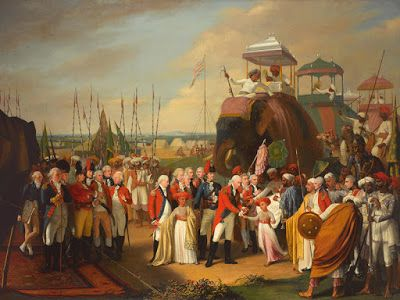

The Third Anglo-Mysore War (1790 – 92)
Tipu Sultan, the ruler of the Kingdom of Mysore, and his father Hyder Ali before him, had previously fought twice with the forces of the British East India Company. British General Charles Cornwallis became the Governor-General of India and Commander-in-Chief for the East India Company in 1786. While he formally abrogated agreements with the Marathas and Hyderabad that violated terms of the 1784 treaty, he sought informally to gain their support and that of the Nizam of Hyderabad, or at least their neutrality, in the event of conflict with Mysore. Some of its results are:-
- Tipu agreed to the terms and signed the Treaty of Seringapatam, ending hostilities.
- General Lord Cornwallis took Tipu Sultan's sons as hostages.
These are the battles that took place in the First Anglo-Mysore War.
- Battle of Calicut (Dec 1789)
- Battle of Sattimungulum (Mar 1790)
- Battle of Shawoor (Mar 1790)
- Battle of Calicut (Dec 1790)
- Battle of Bangalore (Mar 1791)
- Battle of Arikera (May 1791)
- Siege of Coimbatore (Jun to Nov 1791)
- Siege of Nandidrug (Oct 1791)
- Siege of Savandroog (Dec 1791)
- Battle of Ootradroog (Dec 1791)
- Siege of Seringapatam (Feb to Mar 1792)
The Story
The Treaty of Mangalore was no more than a truce for the British and Tipu, as each side was keen to settle the claim to supremacy over the Deccan. Lord Cornwallis was the Governor-General of Bengal between 1786 and 1793. In 1788, the company gained control of the Circar of Guntur, the southernmost of the Northern Circars, which the company had acquired under earlier agreements with the Nizam. In exchange, the company provided the Nizam with two battalions of company troops. Both of these acts not only placed British troops closer to Mysore but also guaranteed the Nizam would support the British in the event of conflict.
Travancore had been a target of Tipu's for acquisition or conquest since the end of the previous war. Indirect attempts to take over the kingdom had failed in 1788, and Archibald Campbell, the Madras president at the time, had warned Tipu that an attack on Travancore would be treated as a declaration of war on the company as per the Treaty of Mangalore.
The Rajah of Travancore also angered Tipu by extending fortifications along the border with Cochin into territory claimed by Mysore as belonging to its vassal state and by purchasing from the Dutch East India Company two forts in the Kingdom of Cochin, a state paying tribute to Tipu Sultan.
The War
On December 29, 1789, Tipu Sultan marched 14,000 troops from Coimbatore and attacked Nedumkotta. The first phase was a defeat for Tipu when the Travancore forces under Kesava Pillai inflicted severe losses on the Tipu forces and drove them back. While the Mysorean forces and their allies regrouped, Governor Holland, much to Cornwallis' dismay, engaged in negotiations with Tipu rather than mobilizing the military. Cornwallis was on the brink of going to Madras to take command when he received word that John Holland's replacement, General William Medows, was about to arrive. Many people fled to Travancore, a state independent of Mysore, and to Cochin, a state paying tribute to Tipu, in the wake of his advance. Medows forcibly removed Holland and set about planning operations against Tipu while building up troops at Trichinopoly.
The Nizam of Hyderabad and the Marathas were already alarmed at the rising power of Tipu and viewed it as a danger to their power. This resulted in a Triple Alliance between the Marathas, the Nizam, and the British against Tipu in 1790. Thus began the Third Anglo-Mysore War (1790–1792).
On September 2, Tipu left Srirangapatnam at the head of a 40,000-man army. Descending the mountain passes beginning on September 9, he began to move toward Sathyamangalam. While the 2,800-man garrison there withstood an initial assault from Tipu's force on September 13, Captain John Floyd, the garrison commander, opted to withdraw. Under cover of night, they crossed the Bhavani and headed for Coimbatore. Tipu, slowed by heavy rains, sent 15,000 cavalry in pursuit. They eventually caught up with and captured much of Floyd's baggage train and continued to pursue the weary garrison. That evening, the full force of Tipu's army fell upon them as they camped at Cheyoor. A desperate stand by the infantry repulsed repeated assaults, and only the arrival of reinforcements sent by Medows rescued them.
Tipu then embarked on a campaign of harassing the British supply lines and communications while screening the movements of his main force. In early November, he successfully misled Medows, moving much of his army north to attack the smaller Bengal force. This force, about 9,000 men led by Colonel Maxwell, had reached Kaveripattinam and strongly fortified his position. Unable to penetrate the defenses, Tipu withdrew to the south on November 14th after learning that Medows was on his trail again. On November 17, Medows and Maxwell joined forces and pursued Tipu, who had decided to make a move toward Trichinopoly. Unable to do more than pillage the town before Medows arrived, Tipu then moved on to rampage through the Carnatic, destroying towns and seizing supplies as he went. He ended up at the French outpost at Pondicherry, where he attempted to interest the French in supporting his efforts against the British. As France was then in the early stages of its revolution, these efforts were entirely unsuccessful. Medows at this point moved toward Madras, where he turned over command of his army to Lord Cornwallis.
On January 25, 1792, Sir Cornwallis moved from Savendroog toward Seringapatam, while Abercromby again advanced from the Malabar Coast. While Tipu's men harassed the column, they did not impede its progress. Cornwallis established a chain of outposts to protect the supply line from Bangalore. Two rocket units were fielded by Tipu Sultan during the war, one of 120 men and the other of 131 men. When the massive army reached the plains of Seringapatam on February 5, Tipu began showering the force with rockets. Cornwallis responded with a nighttime attack to dislodge Tipu from his lines. After a somewhat confused battle, Tipu's forces were flanked, and he retreated into the city, where Cornwallis began siege operations. On February 12, Abercromby arrived with the Bombay army, and the noose began to tighten around Tipu. On February 23, Tipu began making overtures for peace talks, and hostilities were suspended the next day when he agreed to preliminary terms.
Concequences
The combined forces besieged Tipu's capital, Seringapattanam (now Shrirangapattana). Among the preliminary terms that Cornwallis insisted on was that Tipu surrender two of his sons as hostages as a guarantee for his execution of the agreed terms. On February 26, his two young sons were formally delivered to Cornwallis amid great ceremony and gun salutes by both sides. Cornwallis, who was not interested in significantly extending the company's territory or in turning most of Mysore over to the Mahrattas and Hyderabad, negotiated a division of one half of Mysorean territory to be divided by the allies, in which the company's acquisition would improve its defenses. The territories taken deprived Mysore of much of its coastline, and Mysore was also obligated to pay some of the allied war costs. Cornwallis compelled Tipu to sign a treaty known as the Treaty of Seringapattana in March 1792.
Under the terms of the treaty, Mysore ceded about one-half of its territories to the other signatories. The Peshwa acquired territory up to the Tungabhadra River; the Nizam was awarded land stretching from the Krishna to the Penner River, and the forts of Cuddapah and Gandikota on the south bank of the Penner. The East India Company received a large portion of Mysore's Malabar Coast territories between the Kingdom of Travancore and the Kali River, and the Baramahal and Dindigul districts. Mysore granted the Rajah of Coorg his independence, although Coorg effectively became a company dependency.
Tipu Sultan, unable to pay an indemnity of 330 lakh rupees, was required to surrender two of his three sons as hostages of war.
The Wars
The following are the easy links to Wars for quick exploring:-
The Battle of Plassey The Battle of Buxar Anglo-Mysore War 1 Anglo-Mysore War 2 Anglo-Mysore War 3 Anglo-Mysore War 4